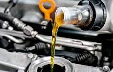
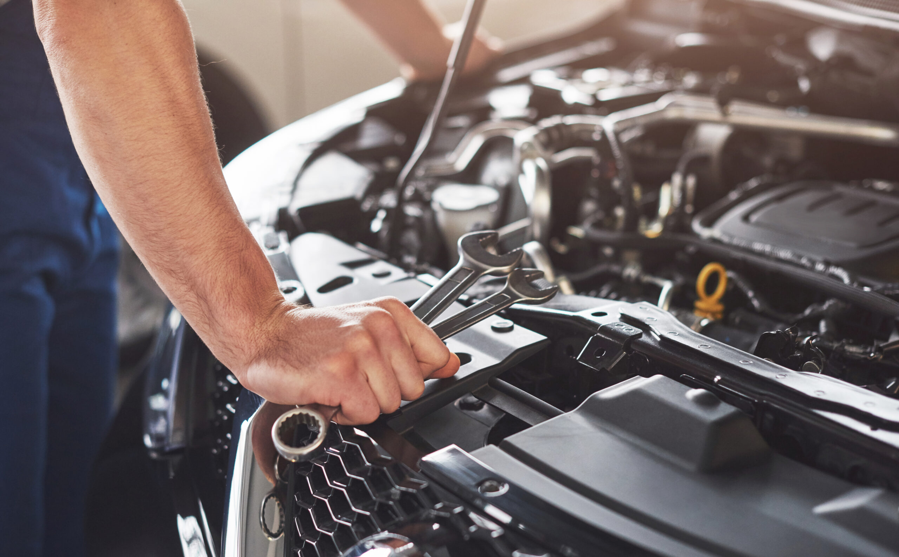
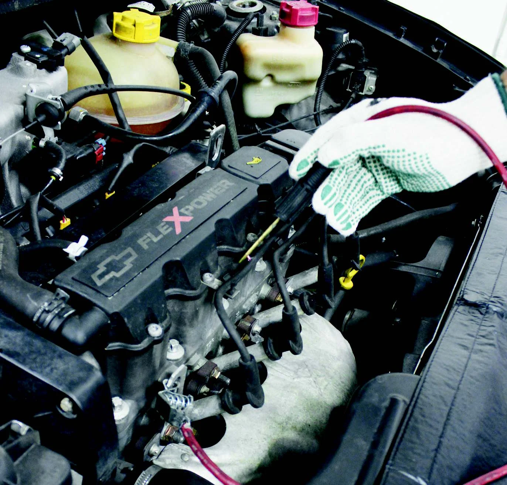
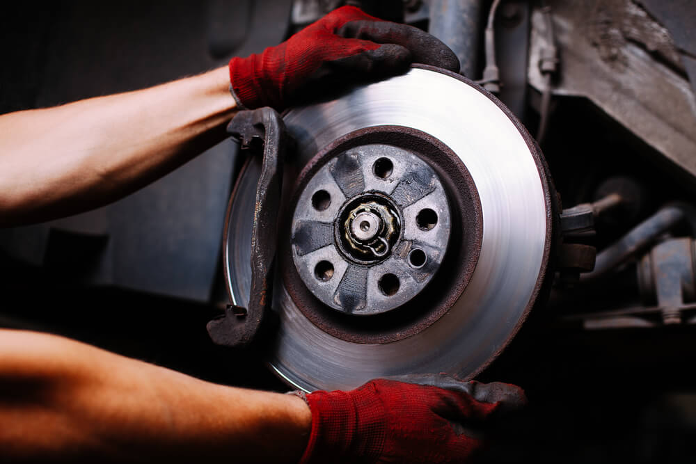

Osvaldo Motors
A Osvaldo Motors é uma oficina mecânica com mais de 20 anos de experiência no mercado. Nosso compromisso é oferecer qualidade, segurança e confiança, cuidando de cada veículo com atenção e responsabilidade.
A Osvaldo Motors é uma oficina mecânica com mais de 20 anos de experiência no mercado. Nosso compromisso é oferecer qualidade, segurança e confiança, cuidando de cada veículo com atenção e responsabilidade.

Substituição do óleo e filtro para manter o motor lubrificado e protegido.
Verificação dos principais componentes do veículo para identificar possíveis problemas.

Diagnóstico e manutenção para garantir o bom funcionamento e desempenho do moto
Inspeção e reparo dos componentes para garantir estabilidade e conforto.

Substituição dos componentes para melhorar a partida e o funcionamento do motor.

Substituição de peças desgastadas para manter uma frenagem segura.
| Serviços | Preço | Tempo |
|---|---|---|
| Troca de óleo | R$ 150 – R$ 350 | 30 – 60 min |
| Revisão de carro | R$ 250 – R$ 800 | 2 – 4 h |
| Manutenção do motor | R$ 300 – R$ 2.500+ | 2 – 8 h |
| Manutenção do sistema de suspensão | R$ 300 – R$ 1.500+ | 2 – 5 h |
| Troca de velas e cabos de ignição | R$ 200 – R$ 600 | 1 – 3 h |
| Troca de pastilhas, discos e componentes de freio | R$ 300 – R$ 1.500+ | 1 – 4 h |